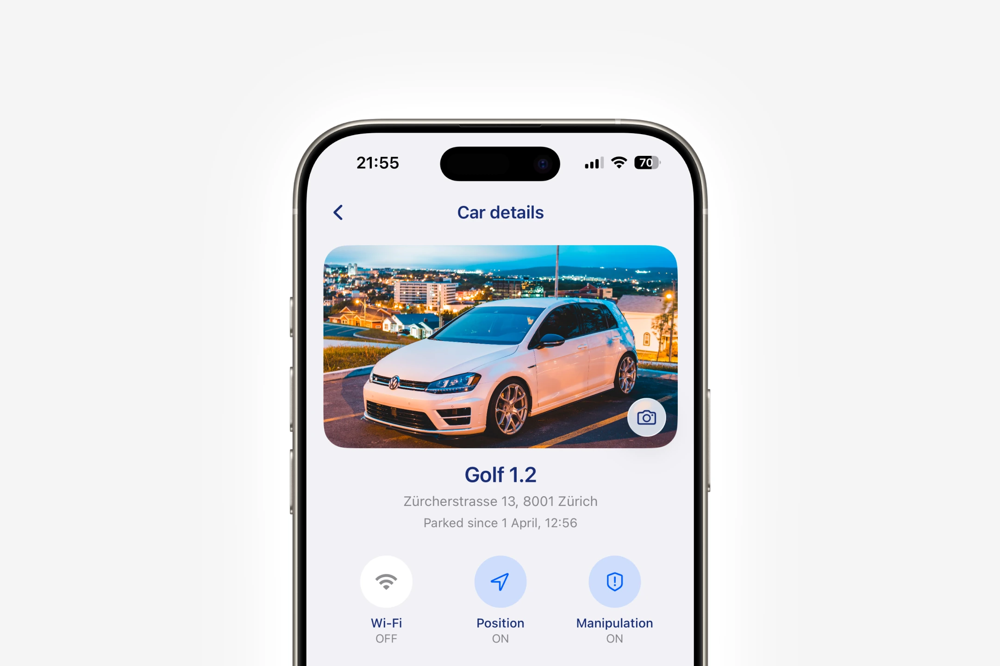
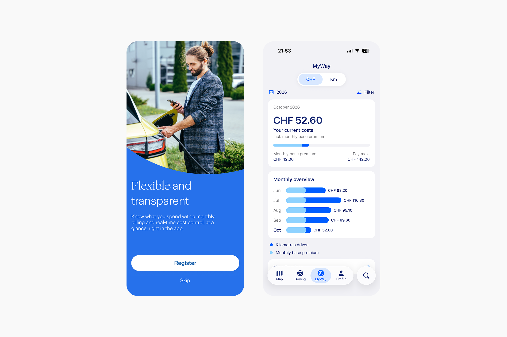
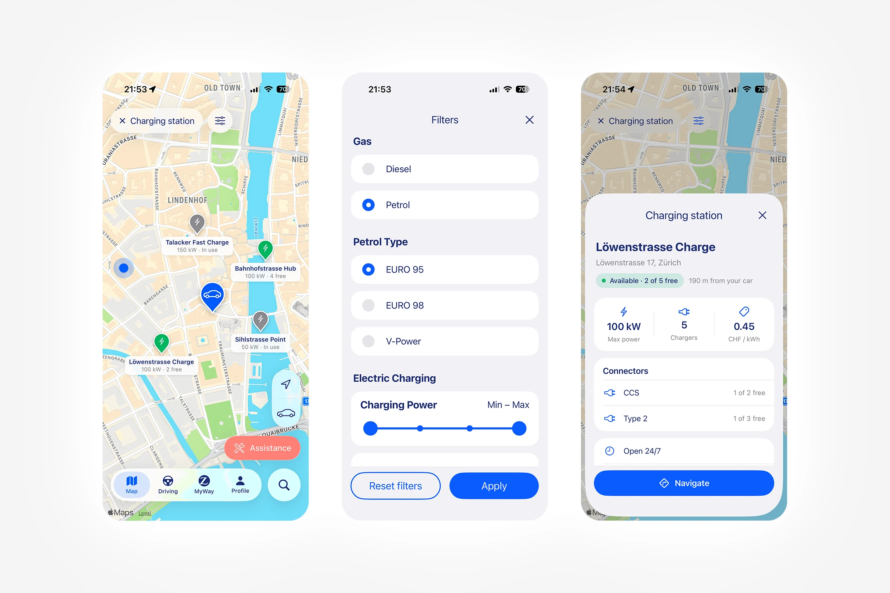
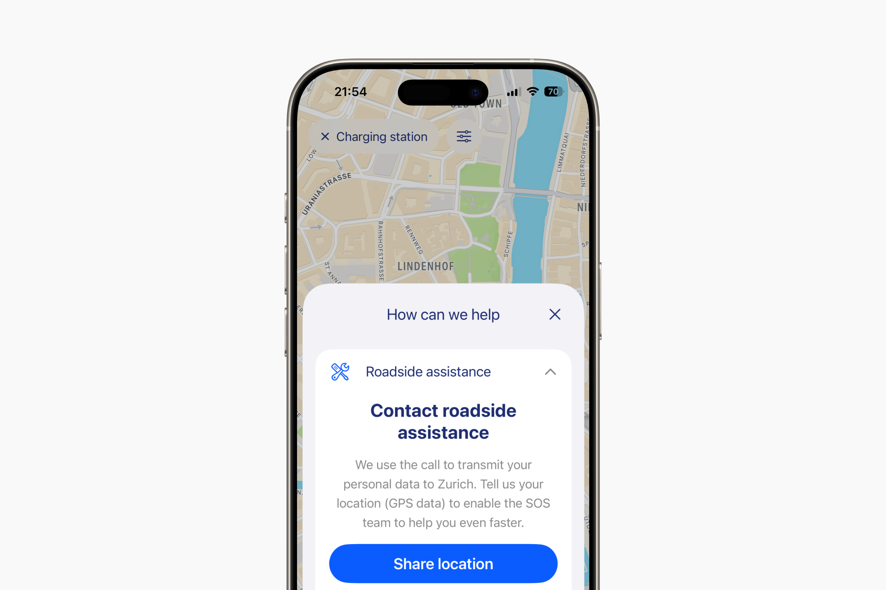
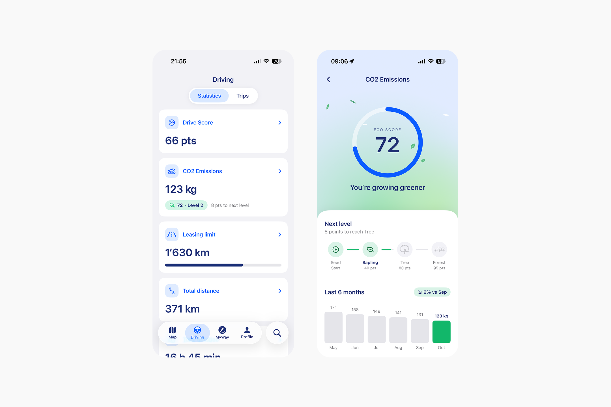
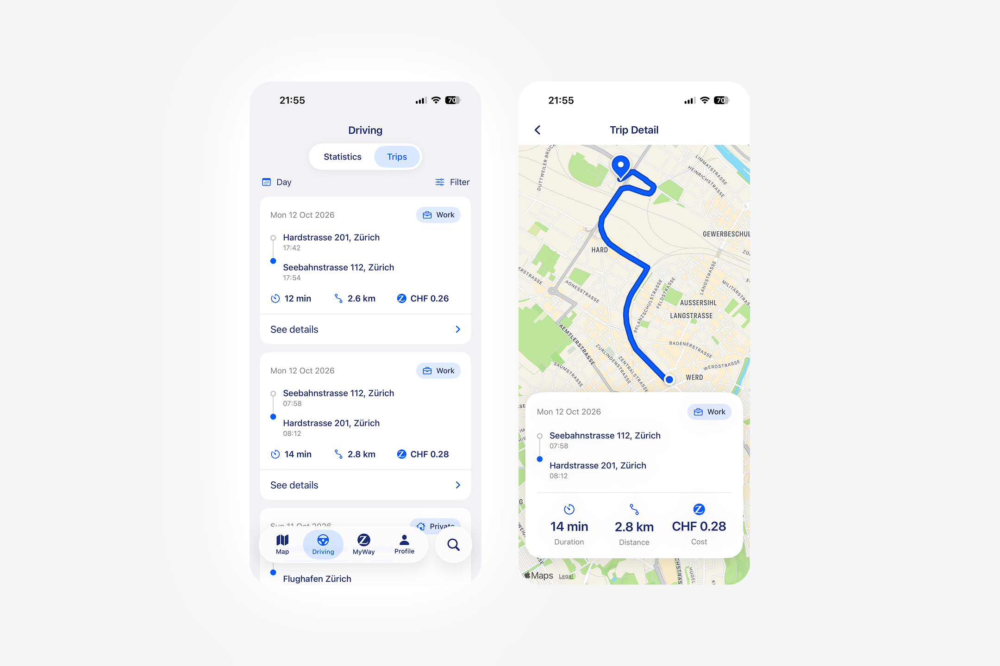
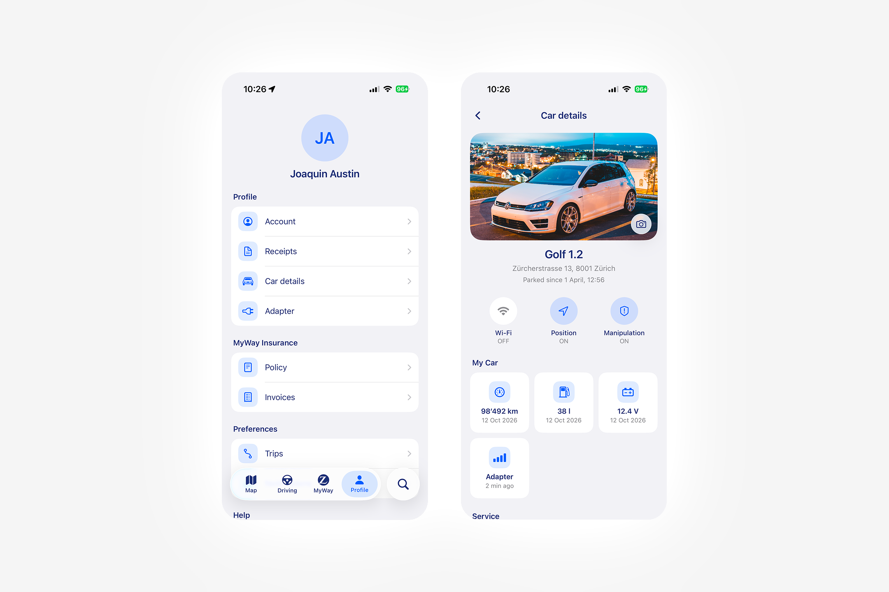
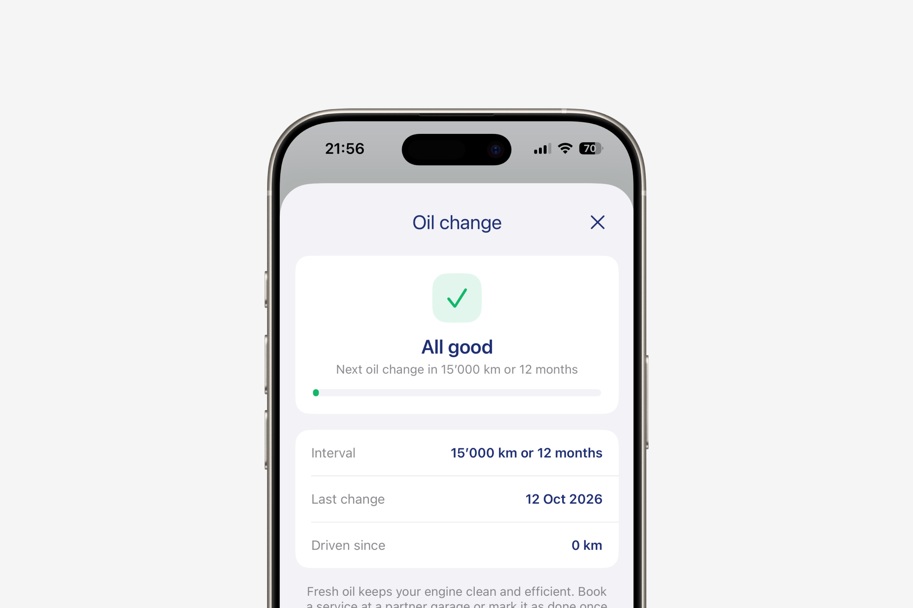

MyWay is Zurich’s pay-as-you-drive car insurance for people who don’t drive every day, or who have a second car. I led the redesign of the app, used by thousands of users in Switzerland.
89%
Satisfaction
+11%
In sales
13%
Fewer support requests
MyWay is Zurich’s pay-as-you-drive car insurance for people who don’t drive every day, or who have a second car. I led the redesign of the app, used by thousands of users in Switzerland.

Context
MyWay users pay for how much they drive. A device plugged into the car tracks the kilometers driven and calculates the variable cost the user pays. Both the device and the mobile app were outsourced to a third party. This dependency kept Zurich from evolving the product or offering personalized service and support to its users.
Designed and owned 100% by Zurich
With full control over the app, the design is now aligned with our design system, brand guidelines and brand values.

A map for the road ahead
The map doesn’t just help users find their car: it also lets them search for charging stations, gas stations and roadside assistance. The goal isn’t to replace the navigation app users already rely on. Instead, it integrates with Google Maps and Apple Maps, so users can start in our app and hand off the route to their preferred one.


Clear metrics for better driving
The app analyzes how you drive and tracks your CO2 emissions. An easy-to-read section, quick to access, shows your driving style: how you brake, accelerate and take corners. Tips and recommendations help you drive more efficiently.


Clear costs, clear kilometers
This section gives users a clear, fully transparent view of the kilometers they’ve driven and how they affect the cost of the service. At any moment, users know exactly how much their next bill will be.
Your profile, your car, your way
From their profile, users can access all the information about their car and their policy. If they want, the app can also keep them informed about the services the car needs.


Business impact
89% Satisfaction
Most users find the new app far more intuitive and personalized.
+11% in sales
Promotion and integration with other Zurich products have boosted sales.
13% fewer support requests
Clearer kilometers driven and dynamic billing have helped reduce user inquiries.
Conclusions
Redesigning an existing product from scratch was both challenging and deeply rewarding. Access to so much data and user feedback was key to focusing our efforts in the right direction. And the opportunity ahead is clear: the market for small second cars and electric vehicles keeps growing, and more and more users are looking for a fair price.
Note: some data here has been adjusted for confidentiality and may not be fully exact.